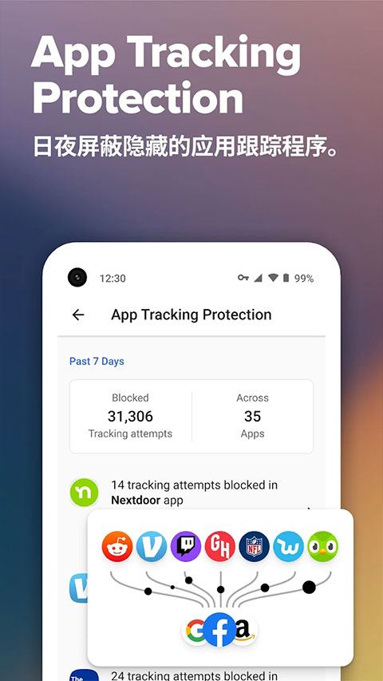

用过十几款搜索引擎后，为什么我还在浏览器里留着 DuckDuckGo
对比主流搜索引擎，DuckDuckGo 在隐私保护与浏览防护上走出了一条完全不同的路。它的搜索不跟踪、HTTPS 智能升级、全链路防护体系究竟是加分项还是累赘？哪些人适合用、哪些人该绕道？这篇对比评测给你一个清晰的判断。
搜索引擎这个赛道，看起来百花齐放，实际长期格局稳定。头部两三家占了绝大部分流量，剩下的玩家要么靠垂直领域活命，要么在隐私方向上找差异化。duckduckgo.com官网属于后者——而且是把"隐私"两个字从口号做成了完整产品线的少数之一。
同类搜索引擎的格局一句话带过
先说清楚坐标系里它站在哪。主流搜索引擎的商业模式本质是：你用搜索免费，搜索引擎用你的数据养广告系统。搜索词、浏览轨迹、设备指纹、地理位置……这些信息被持续积累，最终变成精准投放的原料。这套模式跑了十几年，效率极高，用户也被"免费便利"教育得习以为常。
在这样的格局下，走"不跟踪"路线的搜索引擎天然处在一个尴尬位置：它没法用同样的商业模式养活自己，所以要么找替代变现方式，要么做极简产品控制成本。DuckDuckGo 的选择是两条腿走路——搜索端保持极简不跟踪，同时围绕浏览场景延伸出一整套防护产品，用订阅和增值服务补收入。这条路线让它在同类里显得有点特别：它不只是一个搜索框，更像一个隐私防护套件。
它的差异化：三件别家没做到位的事
用了大半年，我觉得 DuckDuckGo 真正拉开差距的不是"不跟踪"这三个字本身——现在几乎每家都说自己有隐私模式——而是它把这件事做细了，细到竞争对手抄起来都觉得麻烦。
搜索端：不跟踪是默认态，不是选项
多数搜索引擎的"隐私模式"是一个需要主动点击才能开启的入口，而且开启之后往往伴随着功能阉割——比如搜索历史不保存了，但个性化推荐也跟着没了。DuckDuckGo 的逻辑反过来：不跟踪是默认态，不存在"开了隐私模式就牺牲体验"的二选一。
具体机制上有几个容易被忽略的细节。它的搜索架构是聚合式的——自家爬虫建立索引，配合合作方数据补全结果。这种架构的副产品之一就是它没法显示"约 XX 条结果"，因为结果来自多路聚合、没法提前统计总数。很多人第一次用会觉得奇怪，甚至怀疑是不是索引量不够。但反过来想，这个"不显示"恰恰说明它真的没在背后做全量索引的统计——那种"我知道全网有多少匹配结果"的自信，本质上来自对全平台数据的掌控欲。
另一个细节是搜索结果里的即时答案。不少同类引擎会在顶部直接给 AI 生成的摘要，但 DuckDuckGo 的即时答案更多来自专项数据源——维基百科类众源站点、体育数据商、汇率查询等——而且来源会标注清楚。AI 辅助答案虽然也有，但入口和处理方式相对克制，不像头部引擎那样把 AI 生成内容当成结果主体。

浏览防护：HTTPS 升级走"聪明名单"路线
搜索本身不跟踪只是第一步，离开搜索页之后的浏览行为才是更大的隐私黑洞。DuckDuckGo 的浏览器防护层在这件事上做得比我预想的要扎实。
HTTPS 自动升级是一个典型例子。早期的强制加密工具走的是"无脑全升级"路线——访问任何站点都先试 HTTPS，试不通再退回 HTTP。问题在于不少老站点根本没有加密服务，每次都试一遍只会换来白屏等待。DuckDuckGo 的方案是"更聪明的加密"：duckduckgo.com文档里对这套名单机制有详细说明，简单讲就是通过自家爬虫持续探测全网站点，维护一份"哪些站点支持 HTTPS"的名单。命中名单的明文链接直接升级，不在名单上的就不浪费时间。这种策略的好处是用户几乎感知不到它在工作——该快的地方快，该等的地方才等。
跟踪器拦截是另一个核心能力。它的浏览器扩展从官方下载获取后，就能拦截第三方跟踪器，包括 Cookie、像素标签、脚本加载等。实测下来，不少新闻网站、电商平台的跨站广告追踪确实被截断了——搜过某商品之后，接下来几天刷到的相关广告明显减少。这不是因为它能删掉别人的广告，而是广告系统根本拿不到你的行为数据。
订阅服务：把"隐私"从搜索延伸到身份安全
这是我觉得最有意思的一点。DuckDuckGo 的订阅服务里有两个功能：邮箱别名和个人信息移除。
邮箱别名的逻辑是：你注册任何网站时，不用暴露真实邮箱，而是生成一个 DuckDuckGo 托管的别名地址。邮件先到它那里，确认合法后再转发到你的真实邮箱。这样一来，如果某个站点泄露了你的邮箱，泄露的只是别名，你可以随时废掉换一个。这个机制解决的是"止损"问题——账号被盗之后损失可控。
个人信息移除解决的是"清源"问题。互联网上存在一整类数据经纪商，主业是收集并转卖个人档案——姓名、住址、电话、亲属、财产记录。你从没注册过这些站点，但档案就挂在那里，任何人付费可查。这项服务自动扫描数百个经纪商站点、代为提交删除申请、持续跟进删除进度和复发监控。两个功能叠加使用效果最好：一个让注册行为不暴露真实信息，一个清理已经挂出去的旧档案。
不过这项功能目前仅限美国地区，它的法律和技术基础主要在美国——数据经纪商生态的主战场也确实在那。
它的取舍：为这些优势付出了什么
没有完美的选择，DuckDuckGo 的定位决定了它必然要在一些地方妥协，甚至主动放弃。
结果数量确实少一些。 这不是索引量不够，而是它的聚合架构不做全量索引统计。搜索时你会发现结果页不显示"约多少条"，而且有些长尾查询的结果集可能比头部引擎少。对于绝大多数日常搜索来说够用，但如果你在做深度调研、需要尽可能全面的结果覆盖，头部引擎的全量索引能力还是有优势。
生态绑定弱。 头部搜索引擎往往和自家的浏览器、邮箱、办公套件深度整合——登录一个账号，搜索历史、浏览记录、日历、云盘全都联动。DuckDuckGo 不做账号体系，自然也没有这种跨产品联动的便利。搜索设置虽然支持匿名云保存，但本质上就是一个 URL 参数机制，功能和头部引擎的个性化推荐没得比。
翻译和垂直能力有限。 重度翻译需求、专业领域搜索、本地化结果精度，这些都是头部引擎积累多年的优势。DuckDuckGo 目前有基础翻译能力，随产品迭代调整，但入口形态和功能完整度不稳定。碰到这类需求，Bang 指令跳转到专门的翻译站是更稳妥的做法。
订阅服务地区限制明显。 个人信息移除、身份盗用恢复这些功能目前只限美国，对国内用户来说相当于不存在。

选购结论：什么样的人选它
如果你读到这里，应该已经有自己的判断了。我直接给结论。
选 DuckDuckGo 的理由：你对"搜过某商品之后三天广告追着你跑"这件事忍无可忍，或者你经常处理敏感信息、不想留下可追溯的搜索痕迹，又或者你只是觉得搜索引擎不该把你当成产品的一部分——把你的行为数据卖给广告商。对这些人来说，搜索不跟踪不只是隐私偏好，是原则问题。
不选 DuckDuckGo 的理由：你需要头部引擎的全量索引覆盖、与自家生态的深度联动、或专业领域的深度搜索能力；或者你根本不在意搜索引擎收集你的数据、觉得"免费换便利"是合理交易。这些场景下它不是最优解，甚至可能让你觉得"怎么这么难用"。
最后说一句实在话：把浏览器默认搜索引擎换成 DuckDuckGo，是成本最低的隐私实验——试两周，如果你觉得"没它不行"，那就说明你真需要它；如果觉得"不就是个搜索框"，那它可能确实不适合你。没有对错，只有适配。整理这套防护产品资料的 Markdown 源文件我同步备份在GitHub、Gitee和GitCode三个仓库，怕哪天一个挂了找不着。